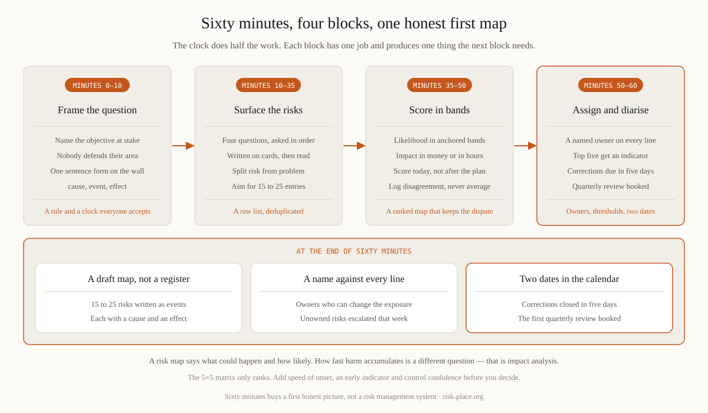

You do not need a methodology to start. You need the right people in a room with a wall and a timer. Invite the ones who actually run things — operations, technology, finance, procurement, people and premises — plus whoever will own the register afterwards. Five to eight is the working range: below four you get one executive's view of the company, above ten nobody says the uncomfortable thing. No full management committee, no deputies, no observers. Open with one rule said out loud — nobody here is defending their area, and anything raised in the next hour is a contribution rather than an admission. Then run to the clock: ten minutes to frame, twenty-five to surface, fifteen to score, ten to assign. Sessions without a timer spend forty minutes on the first risk somebody feels strongly about.
Most of what the room produces first will not be risks, and sorting that in real time is the highest-value thing the facilitator does. A problem already exists — the backup job failed twice this quarter. Its probability is one, so it belongs in an action log with a date. A consequence is what risks produce — lost revenue, a penalty, reputational damage — and since nearly every entry leads to those, listing them separately doubles the map without adding a decision. A risk is a future event with a cause and an effect, written so a reasonable person could bet on whether it occurs. Insist on that form and the list halves in five minutes. "Cyber" is a category; "ransomware encrypts the ERP database and order processing stops for more than a day" is a risk, because you can argue about its likelihood and its cost. Fifteen to twenty-five named risks is a usable first map; two hundred lines is an inventory nobody will maintain past the second quarter.
Ask them in this order, because the order does most of the work.

Score likelihood and impact in bands, and give every band words the room can test. Likelihood works best as four anchored steps — it has happened here, it has happened at a company like ours, it is plausible but neither of us has seen it, it would be a first for the industry. Impact has to be anchored in something countable, money over a defined period or hours of service lost, because "high" means whatever each participant privately assumes. Then four rules. Score the exposure as it stands today with the controls that actually run, not as it would be if the plan worked. Give each risk ninety seconds. When two people disagree by two bands, that disagreement is the finding — record both numbers and never average them. And score against something: a map with no reference to risk appetite ranks risks but cannot say which are unacceptable.
The matrix itself is a good communication device and a poor decision device, for three reasons. It multiplies ordinal scores as though they were cardinal, so four by two and two by four both give eight, although a rare catastrophe and a frequent irritation call for entirely different management. It compresses the tail, since everything above the top band collapses into a five, putting the event that ends the company in the same square as the one that ruins a quarter. And it records one impact per risk when real risks have a range of outcomes. Three cheap additions repair most of that. Speed of onset, because warning time decides what control is worth buying. A column headed "how would we know", carrying the early indicator, which is where a map turns into KRI monitoring — the subject of our note on indicators that change decisions. And control confidence, the evidence that the control actually works, based on when it was last tested. Colour the map by control confidence rather than by score and the conversation changes in ten seconds.
A risk map and a business impact analysis answer different questions, and neither substitutes for the other. The map is threat-facing and probabilistic — what could happen, how likely, how bad. Impact analysis is process-facing and time-based — if this activity stops, how fast does harm accumulate, and therefore how quickly must it be back, whatever caused the stop. That is why recovery time objectives come from impact analysis and never from a risk score, and why a company can hold a mature map and still not know what to restore first. They meet at one point: the map says which threats deserve a tested scenario, the analysis says what any recovery must achieve. Our guide to business impact analysis covers the other half of the pair, and what business continuity management is shows where both sit.
The hour produces a draft, not a register, and the difference is settled in the following week. Give every entry a named risk owner — a person who can actually change the exposure, not a department, and not the risk function, which owns the method rather than the risks. Circulate it with a five working day deadline for corrections, because people remember the fourth risk on the drive home. Convert the top five into an indicator with a threshold and a pre-agreed action. Book the review now, forty-five minutes a quarter with the same people. And escalate the entries nobody wants to own that same week rather than leaving the column blank; a risk with no owner usually sits across two directors, and those are the ones that actually happen. Turning a first map into a maintained register is the subject of module M2 of the ERGP programme.
Risk identification, honest scoring and the move from a first map to a maintained register are worked through in module M2 of ERGP, the first resilience governance certification fully available in Arabic, also in English. Six modules, six practical outputs, a verifiable certificate.
Explore the ERGP programme